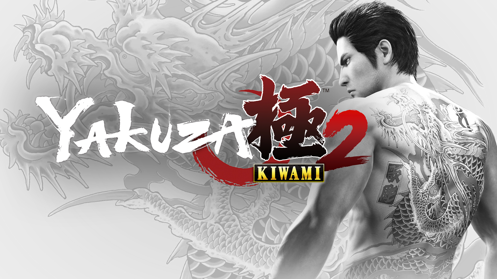
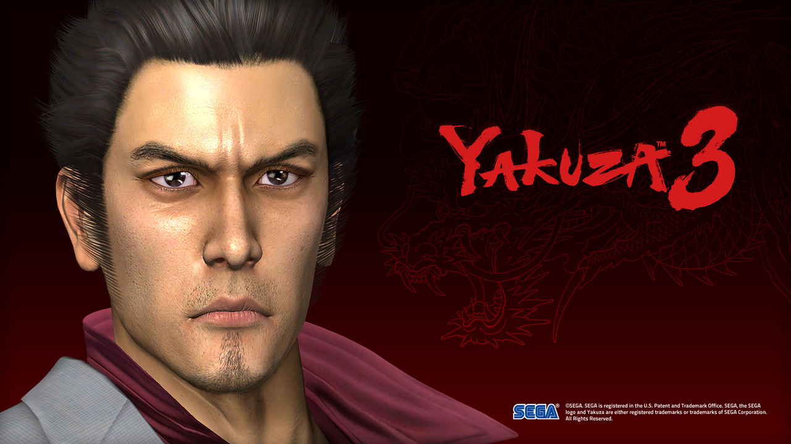

Yakuza 0 (2017)

Gameplay
Yakuza 0 is an action-adventure game set in an open world
environment and played from a third-person perspective. The game
takes place from December 1988 to January 1989, in Kamurocho and
Sōtenbori, fictionalized recreations of Tokyo's Kabukichō and
Osaka's Dōtonbori areas respectively. The player controls series
protagonist Kazuma Kiryu and recurring character Goro Majima,
alternating between the two at predetermined points during the
story.
Players can freely walk around Kamurocho and Sotenbori, interacting
with people they meet to trigger side-quests, battling enemies who
attack them on the street, or playing one of several minigames,
including fully playable versions of Sega arcade games such as Out
Run, Super Hang-On, Space Harrier and Fantasy Zone. Completing
certain objectives, such as eating every dish at a restaurant or
reaching a target score in a minigame, will also grant the player
special Completion Point currency; these Completion Points can be
spent at a shrine to receive additional bonuses, such as special
items or character upgrades.
Development
The game was first announced in a special Yakuza event on 24 August
2014, together with a trailer. A Chinese-language localization of
the game was announced in 2014 and eventually released in Asia in
May 2015. Shonan no Kaze performed the game's main theme and ending
theme, "Bubble" and "Kurenai" respectively; these songs were not
licensed for the English release and were instead replaced by
original instrumental tracks.
On 5 December 2015, at PlayStation Experience in San Francisco, Sony
Computer Entertainment's Gio Corsi announced that Yakuza 0 would be
coming to the Americas for the PlayStation 4. Initially, no official
confirmation was made of a European release. In July 2016, it was
announced that the game would release in North America and Europe
for the PlayStation 4 in January 2017.
Yakuza Kiwami (2018)

Gameplay
Like the original game, Yakuza Kiwami is an action-adventure game
with role-playing elements set in an open world environment and
played from a third-person perspective. The player controls
protagonist Kazuma Kiryu as he explores the streets of Kamurocho, a
fictional district of Tokyo based on the real-life Kabukichō
district. In addition to the main story, players will randomly
encounter enemies on the street to battle, as well as meet people
that will offer Kiryu side quests which can be completed for
rewards.
Similar to the prequel Yakuza 0, Kiwami features four fighting
styles that the player can switch between in combat: the balanced
Brawler style, the slow and heavy Beast style, the weak but quick
Rush style, and Kiryu's traditional Dragon style. Players will earn
both money and experience points by defeating enemies or completing
side quests. Experience points can be used to acquire upgrades for
Kiryu such as new techniques or an extension to his health bar.
Money can be spent to purchase equipment or healing items, or to
play various minigames and side-activities such as gambling,
karaoke, and the card battle game Mesuking. Completing certain
objectives will also grant the player special Completion Point
currency; this CP can be spent to receive additional bonuses, such
as special items or character upgrades.
Development
Writer Masayoshi Yokoyama stated that Sega had plans to develop
Kiwami in 2015 with the company wishing gamers enjoy the first
Yakuza game on more modern quality. However, they were busy during
that time making the game Yakuza 0. Positive feedback to the prequel
led to the making of Kiwami. The franchise's 10th anniversary and
the engine used for Yakuza 0 also provided help according to
Yokoyama. The gameplay was made to be as friendly as possible to
newcomers with them being options to save the game's progress
whenever they wanted. There were ideas in regards to changing the
cast and recordings of the original games, but the staff felt it
would not be an appealing remake if there were so many changes.
Rather than make it look like a retro game retaining the elements
from the original PlayStation 2 games, the gameplay was made similar
to eight generation titles, most notably Yakuza 0. Therefore, the
team had to face the challenge of understanding the quality of the
graphics and audio they could produce with a next generation console
in contrast to the original console, which left the team wondering
if there were issues with different parts of the game like the way
the original Yakuza camera worked. The new voice actors include
Tomokazu Sugita (who plays Shinji), however, his characterization
was left to keep faithful to his bond with Kiryu despite their
different ranks. The story was further expanded to increase the
length while adding new minigames. The fighting system was borrowed
from Yakuza 0 with a focus on grinding. Similar to the such game,
Yakuza Kiwami has strong depiction of violence, most notably in the
Heat Action sequences the player can perform. Yokoyama stated they
wanted to make them as intense as possible.
Yakuza Kiwami 2 (2018)

Gameplay
Yakuza Kiwami 2 is a remake of Yakuza 2, and is an action-adventure
game set in an open world environment and played from a third-person
perspective. Similar to the previous remake title, Yakuza Kiwami,
Kiwami 2 follows the same plot structure of Yakuza 2 while adding
new gameplay features and enhancements from later titles, as well as
new story elements to resolve confusing plot points in the original
release and tie the game more closely to other titles in the series.
The player controls series protagonist Kazuma Kiryu as they explore
the fictional Japanese districts of Kamurocho, Tokyo and Sotenbori,
Osaka. Combat is based on that previously seen in Yakuza 6. A new
"Majima Saga" story scenario features recurring series anti-hero
Goro Majima as a playable character. The Cabaret Club minigame from
Yakuza 0 returns, as does the Clan Creator from Yakuza 6, bringing
in New Japan Pro Wrestling stars Keiji Mutoh, Masahiro Chono, Riki
Choshu, Genichiro Tenryu, and Tatsumi Fujinami.
Development
Yakuza Kiwami 2 was initially leaked on August 24, 2017 via a
listing on the Taiwanese PlayStation Store. The title was officially
announced two days later alongside Yakuza: Like a Dragon, Yakuza
Online, and Hokuto ga Gotoku. The game runs on the Dragon Engine
which was previously used in Yakuza 6. Several characters were
recast for the remake, including Hakuryu as Ryo Takashima, Houka
Kinoshita as Wataru Kurahashi, Yuichi Kimura as Tsutomo Bessho, and
Susumu Terajima as Jiro Kawara. The in-game arcade features playable
versions of Virtua Fighter 2 and Virtual On.
Yakuza 3 (2009)

Gameplay
Yakuza 3 (Japanese: 龍が如く3, Hepburn: Ryū ga Gotoku 3, "Like a
Dragon 3") is the third main entry in the Yakuza series, released
for the PlayStation 3 in 2009. It is developed by Sega's CS1 Team
and published by Sega. It was released in Japan and South East
Asia on February 26, 2009 and in North America and Europe on March
9, 2010, and March 12, 2010, respectively. A remaster for the
PlayStation 4 was released in Japan on August 9, 2018 and worldwide
on August 20, 2019. A sequel, Yakuza 4, was released in Japan on
March 18, 2010.
Development
Yakuza 3 has a default video output of 720p. It supports HD graphics
rendering at a resolution of 1024x768. It does not use anti-aliasing
but it supports 1080p mode upscale.
Daisuke Tomoda, CS1 Team (Sega CS R&D) the visual artist and lead
character designer of the Yakuza series since the original game,
partially unveiled the development of Yakuza 3 at the 2009 Game
Tools & Middleware Forum seminar held in Tokyo on June 15. The
character design of Yakuza 3 began shortly after the completion of
Ryū ga Gotoku Kenzan! in 2008 with a three-week project phase
followed by eight months of production. In the end 110 characters
with high polygon were created for use in cutscenes, along with 250
minor characters who did not appear in said cutscenes. These
characters were created by a 60-member team, with each team member
producing a dozen characters. A total 360 characters were produced,
using a "one person, one body" philosophy and a
"three-days-per-body" target schedule. In comparison, the production
of Yakuza took 10 months and had no more volume. The series'
production pace had been one of annual releases since the original
Yakuza was released in 2005. CS1 used this slogan to describe the
game's graphics: "Not Reality but Real (リアリティではなくリアル,
Riariti de wa naku riaru).